Insert
One token buys one try. Free play starts with 20 tokens.
A cozy claw game · iPhone & iPad
A little skill. A little luck.
Drop a token, line up the claw and win a little plush friend in five minutes or less. Find one of every Shibuya toy and she walks out of the arcade into a pixel-art street that follows your clock: neon at night, fog in the morning, golden light at sunset.
How it plays
The claw game is built for the in-between bits of your day: the bus stop, the train platform, a study break. Play with one thumb, put it away whenever your ride shows up. Your progress saves itself.
One token buys one try. Free play starts with 20 tokens.
Steer in eight directions. Orbit and zoom the camera to judge the depth.
Rotate the claw in 15° steps. Claw Assist shows your grip odds.
The claw drops, closes, lifts and comes home on its own.
Clear a path
Every machine starts with 41 toys in three layers. Cheap, light plush cover the heavy, valuable ones, so each win opens the way a little further. Misses nudge the pile. The luck is rolled once when you press Grab, so reloading never changes the result.
One of every friend
Collect one of each Shibuya plush and the whole collection tucks into her bag. The automatic doors slide open, light floods in, and she steps out onto the street. The camera takes a little tour of the neighborhood, and from then on the city is yours.
A street that keeps your time
The street map is drawn in hand-made pixel art and lit by the clock on your device. Street lights, lit windows and shop neon come on after dark. Mornings roll in with fog, noon casts hard little shadows, and sunset paints everyone gold.
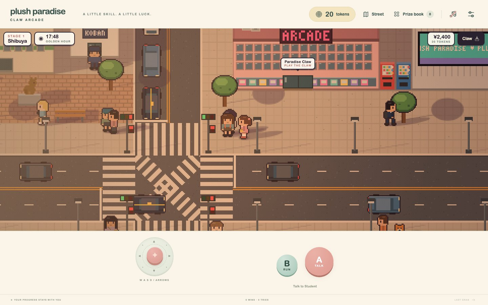
Right now it's … where you are, so that's the look the game would show you.
Life on the street
Walk with the same joystick. Press A to talk to people, step into shops, or go home. Traffic stops for you, and the scramble crossing chirps when everyone can cross.
Four stops on the line
Each neighborhood has its own cabinet, its own eight plush and its own view out the back of the arcade. Later toys are worth more at the Toy Swap, which keeps the next fare within reach.
Stage 1 渋谷
The Paradise Claw by the scramble crossing. The classic friends, from the Mochi Puff to the legendary Stardust Dragon.
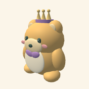
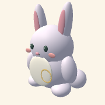
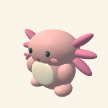
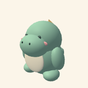
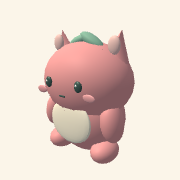
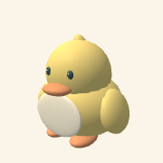
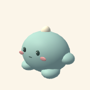
Where it all starts
Stage 2 原宿
A pastel cabinet below the Takeshita Street gate, with the Meiji forest beyond. Sweets and street fashion, crowned by the Rainbow Unicorn.
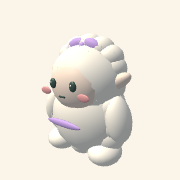
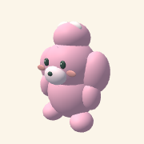
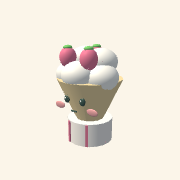
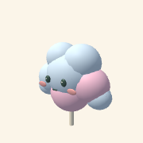
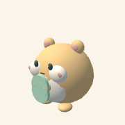
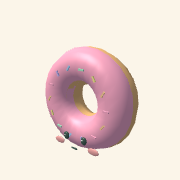
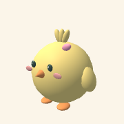
Ticket ¥1,000
Stage 3 秋葉原
The Radio Cabinet glows under Electric Town's signs and the rail bridge. Robots, games and gadgets, led by the heavy Mecha Kaiju.
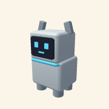
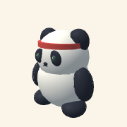
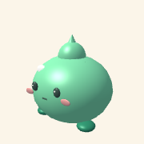
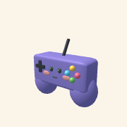
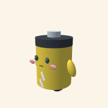
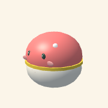
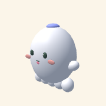
Ticket ¥3,000
Stage 4 池袋
The Sunshine Cabinet sits under the tower, with a rooftop aquarium and the good-luck owl nearby. Sea friends, topped by the flying Sky Penguin.
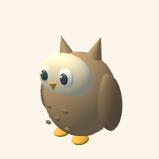
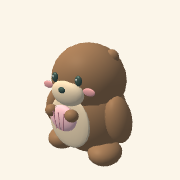
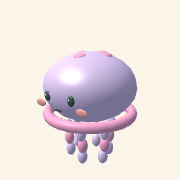
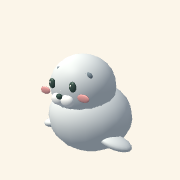
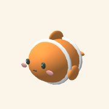
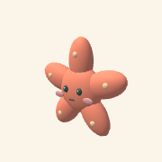
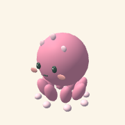
Ticket ¥7,500
Something to come back to
The prize book shows each machine's eight toys, rarest first, with their weight and the layer they start in. Keep the first of every friend on your shelf, trade the extras for train fare, and fill the book one short break at a time.
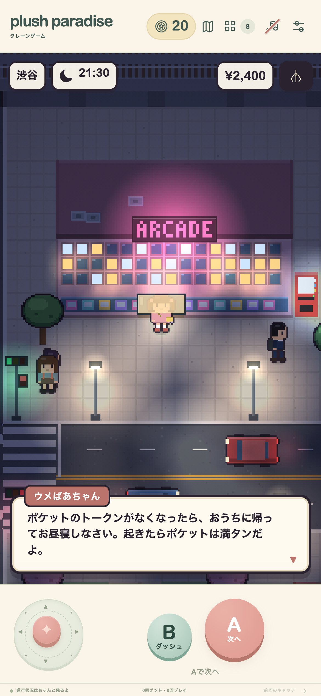
Your language
Every button, toy, tip and conversation is translated. The game follows your device language, and you can switch any time in Settings.
Free to play
The Paradise Claw in Shibuya
Optional in-app purchase
Screenshots
Win a plush while you wait. Then, when you're ready, step outside.